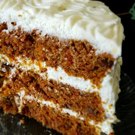

Homepage

Carrot Cake
Grated carrot is the main ingredient of this moist and rich cake.
Ingredients
- 6 cups grated carrots
- 1 cup brown sugar
- 1 cup raisins
- 4 eggs
- 1 and a half cups white sugar
- 1 cup vegetable oil
- 2 teaspoons vanilla extrat
- 1 cup crashed pineapple, drained
- 3 cups all-purpose flour
- 1 and a half teaspoons baking soda
- 1 teaspoon salt
- 4 teasponns ground cinnamon
- 1 cup chopped walnuts
Steps:
- In a medium bowl, combine grated carrots and brown sugar.
Set aside for 60 minutes, then stir in raisins.
- Preheat oven to 350 degrees F (175 degrees C).
Grease and flour two 10 inch cake pans.
- In a large bowl, beat eggs until light.
Gradually beat in the white sugar, oil and vanilla.
Stir in the pineapple.
Combine the flour, baking soda, salt and cinnamon, stir into
the wet mixture until absorbed.
Finally stir in the carrot mixture and the walnuts.
Pour evenly into the prepared pans.
- Bake for 45 to 50 minutes in the preheated oven, until cake
done with a toothpick.
Cool for 10 minutes before removing from pan.
When completely cooled, frost with cream cheese frosting.
Return to top